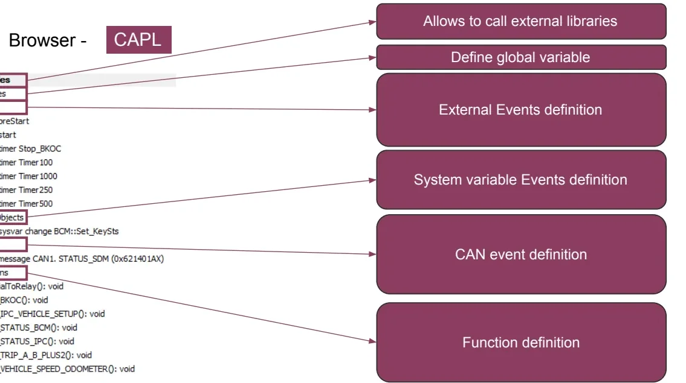
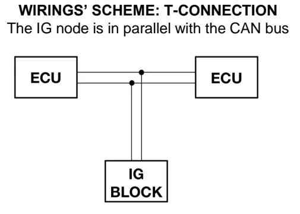
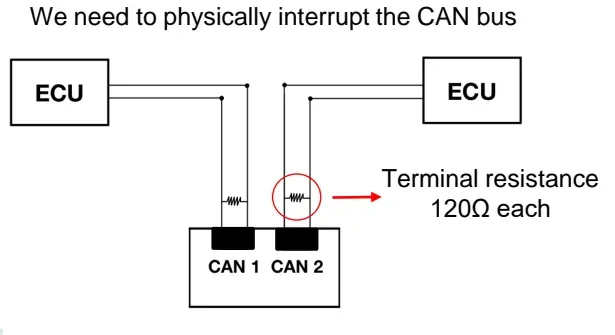

CAPL — CAN Access Programming Language¶
Welcome to your first scripting tool of the bootcamp. CAPL (CAN Access Programming Language) is a C-like, event-driven language built into Vector's CANalyzer and CANoe — and it is the tool that turns you from a passive observer of bus traffic into someone who can shape it. With a few lines of CAPL you can react to messages as they arrive, transmit your own, simulate missing Electronic Control Units (ECUs), and deliberately inject faults to see how the vehicle reacts.
Why does this matter to you? In daily E/E verification work you rarely have the full vehicle: an ECU is missing, a maneuver is too dangerous to perform on the road, or a fault simply never happens on its own. CAPL closes that gap. After reading this article you will be able to write a working CAPL script — react to messages, send signals with correct physical values, drive timers — and choose the right tool (CAPL gateway or IG Block) for a fault-injection test.
Typical things CAPL is used for:
- Analysis — filter and inspect specific messages or signals in a live trace, drive the replay block to re-analyze a recorded log, build custom models for a diagnostic tool.
- Simulation — emulate one or more ECU nodes (a "black box" rest-bus simulation), transmit messages cyclically or on event, react to user actions such as a key press, inject error frames or network faults to evaluate the ECU's strategy.
- Gateways and manipulation — forward or modify traffic between two CAN buses, change physical signal values in real time, simulate Loss of Communication or implausible data (CRC / message counter faults).
The event-driven model¶
Here is the one mental shift CAPL asks of you: there is no main() loop.
CAPL is procedural but event-controlled — you write event procedures,
blocks of code that sit idle until their trigger occurs, plus global variables
and user-defined functions. Think of it as answering calls rather than running
an assembly line. The three classes of triggers are:
- CAN events — a message is received, an error frame appears, the controller changes state;
- Time events — a software timer expires;
- I/O events — a key is pressed, an environment/system variable changes.
flowchart LR
MSG["CAN message received"] --> EV
KEY["Key pressed"] --> EV
TIM["Timer expired"] --> EV
SYS["Measurement start/stop"] --> EV
ERR["Error frame / bus-off"] --> EV
EV["Event procedure runs"] --> ACT["Send messages, set variables,<br/>write to trace window"]The measurement itself has a lifecycle, and your scripts hook into it:
stateDiagram-v2
[*] --> PreStart: GO button
PreStart --> Measuring: on start
Measuring --> Measuring: event procedures
Measuring --> Stopped: STOP button (on stopMeasurement)
Stopped --> [*]The lifecycle matters because each phase allows different actions — getting
this wrong is a classic beginner stumble (e.g. trying to send a message in
preStart silently does nothing):
| Event | Fired when | Typical use | Restrictions |
|---|---|---|---|
on preStart |
GO button, before start | Initialize variables, read files, write to the Write window | Cannot send messages or set timers |
on start |
Measurement starts | Start timers, send first messages, initialize environment variables | — |
on stopMeasurement |
STOP button | Finalize logs, write summary information | — |
Each of these can appear only once in a script.
The CAPL Browser¶
You write and compile scripts in the CAPL Browser, opened from CANalyzer/CANoe via the Tools menu or by double-clicking a program node in the measurement configuration. It organizes the code in a tree so every event procedure has a well-defined place — and, helpfully for newcomers, it lets you drag functions, events and database symbols (messages/signals) directly into the editor instead of typing names from memory.

A CAPL source file has three parts:
- Global variable declarations (
variables { … }) — plusincludesfor external libraries; - Event procedures (
on message …,on timer …,on key …, …); - User-defined functions, callable from any event procedure.
Language basics¶
If you have seen any C, you already know the syntax: blocks in { … },
if/else, switch/case/default, for/while/do-while, continue,
break, return, and the usual arithmetic, logical and assignment operators
(+ - * / %, ++ --, += &= |= ^=, ! && ||). Arrays are declared as in C.
If you have not seen C — don't worry, the examples below are enough to start
from, and the exercises build up gently.
Data types¶
| Type | Description | Size |
|---|---|---|
char |
Character | 8 bit, unsigned |
byte |
Byte | 8 bit, unsigned |
int |
Integer | 16 bit |
word |
Word | 16 bit |
long |
Long integer | 32 bit |
dword |
Double word | 32 bit |
int64 |
64-bit integer | 64 bit |
float / double |
Floating point | 64 bit |
message |
CAN message object | — |
timer |
Timer, second resolution | max 1799 s |
msTimer |
Timer, millisecond resolution | max 65535 ms |
Uninitialized variables default to 0 — except timers, which must be armed
with setTimer() before use.
The this keyword¶
this is CAPL's most useful little word. Inside an event procedure it refers
to the object that triggered the event — the received message, the changed
variable, the error frame. It is how you read what just happened:
on message 0x555
{
byte val = 0;
if (this.CAN == 1) // received on channel 1?
{
val = this.byte(0); // first payload byte
}
}
Useful this selectors on messages: .CAN (channel), .dir (rx/tx),
.byte(n), signal names, .id, .dlc, .time. On error-state events you can
read this.errorCountTX / this.errorCountRX.
Working with messages¶
Declaring message objects¶
If a DBC (Database CAN) file — the network description that maps raw frame bytes to named, scaled signals — is linked to the configuration, ID, DLC and signals are imported automatically and you can use the symbolic name; otherwise declare by ID and set every property yourself:
variables
{
message STATUS_BCM msgSTS_BCM; // from the DBC
message 0x100 msgRaw; // by identifier (hex or dec)
message * msgAny; // ID assigned later at runtime
}
on start
{
msgRaw.DLC = 8; // or: message 0x100 msgRaw = {DLC = 8};
msgAny.id = 0xFA;
}
Signals: raw vs. physical values¶
Assigning a signal name writes the raw value — the bare integer that
travels on the bus. Appending .phys lets CAPL apply the DBC scaling
(physical = raw * factor + offset) for you, so you can think in engineering
units:
message EngData EDMsg;
EDMsg.EngSpeed = 2500; // raw value on the bus (0x9C4)
EDMsg.EngSpeed.phys = 5000; // physical rpm; CAPL computes the raw value
To bind a signal to a knob on a panel or another external control, link it to a
system variable with the @sysvar::Namespace::Name syntax (create the
variable in CANalyzer under Environment → System Variables → User-defined,
choosing namespace, name, type, default and min/max):
msgSTS_BCM.RechargeSts = @sysvar::BCM::Set_RechargeSts;
Transmitting: output()¶
Here is a rule worth memorizing early: nothing goes on the bus until you call
output(). Setting signals only prepares the message in memory:
TX_STATUS_BCM()
{
msgSTS_BCM.VehicleSpeed.phys = @sysvar::BCM::Set_VehicleSpeed;
msgSTS_BCM.RechargeSts = 1;
output(msgSTS_BCM); // actually transmit
}
Reacting to CAN traffic¶
on message is the workhorse event — most of your scripts will start here. The
filter can be an ID (decimal or hex), a DBC name, a channel qualifier, a range,
or everything:
on message STATUS_SDM { /* one DBC message */ }
on message 0x123 { /* one ID */ }
on message CAN1.123 { /* one ID on channel 1 only */ }
on message CAN2.* { /* anything on channel 2 */ }
on message 100-200 { /* ID range */ }
on message * { /* every message, all buses */ }
A common pattern in gateway scripts is to ignore the node's own transmissions — forgetting this is an easy way to create an infinite forwarding loop:
on message CAN2.*
{
if (this.dir != rx) return; // skip frames we transmitted ourselves
...
}
Error-related events let you build statistics or fault injection:
| Event | Trigger |
|---|---|
on errorFrame |
An error frame appears on the bus |
on errorActive / on errorPassive |
Controller enters the respective state |
on busOff |
Controller goes bus-off |
on warningLimit |
Error counter crosses the warning limit |
on errorFrame
{
if (this.CAN == 1 && (timeNow() - preTime) < 100000)
write("Error frames less than one second apart on channel 1.");
}
output(errorframe); // you can also *generate* an error frame
Tip
Use the error-state events to terminate a measurement cleanly when the bus collapses, or to automatically reset after a bus-off — much more robust than watching the trace by eye.
Keyboard events¶
on key turns your keyboard into a test console during a running measurement —
surprisingly handy when you want to trigger something by hand at exactly the
right moment:
on key 'a' { ... } // lowercase a
on key 'A' { ... } // Shift+A (equivalent: on key 0x41)
on key ' ' { ... } // spacebar (equivalent: on key 0x20)
on key F1 { ... }
on key shiftF1 { ... }
on key ctrlPageDown { ... }
on key * { ... } // any key
Typical use: arm a fault, trigger a message burst, or print a counter —
e.g. write("A total of %d messages 0x1A1 counted", counter);.
Timers¶
Timers are programmable clocks for periodic or delayed actions — the backbone of any node simulation, since real ECUs send most of their messages cyclically. Three steps: declare, set, handle.
variables
{
msTimer myTimer;
message 0x100 msg;
}
on key 'a'
{
setTimer(myTimer, 20); // fire once, 20 ms from now
}
on timer myTimer
{
output(msg);
// setTimer(myTimer, 20); // re-arm manually for a cycle ...
}
Use setTimerCyclic(myTimer, 20) instead of re-arming by hand for clean
periodic transmission. Remember the ranges: timer counts seconds (max 1799),
msTimer counts milliseconds (max 65535).
CAPL gateways and the IG Block¶
Now for the part you will use most during Verification & Validation (V&V): manipulating live vehicle traffic. Some maneuvers cannot be reproduced physically — they would endanger the driver, damage sensors/actuators/wiring, or require conditions the vehicle cannot easily reach. Instead, you modify the CAN traffic itself: change signal values, simulate Loss of Communication (LoC), or inject implausible data (message counter / CRC errors) to check that receiving ECUs set the right Diagnostic Trouble Codes (DTCs).
Two tools cover this, chosen according to the frame type — the decision is simpler than it first looks:
IG Block — for on-event messages¶
The Interactive Generator (IG) Block sends on-event messages only. It is wired in parallel with the bus (a T-connection) — the bus is not interrupted.

Everything is configured interactively in a dialog, online during a running measurement: pick the messages from the project's DBC (ID and DLC are shown), set the trigger condition that decides when each frame is sent, and edit the payload either as raw hex in the data field or per-signal in raw/physical values in the signal list. No coding required — this is the fast path.
CAPL — for cyclic and cyclic-on-event messages¶
To touch a cyclic frame you must sit between the ECUs: the CAN bus is physically interrupted and routed through two channels of the Vector interface (an S-connection, typically via a Breakout Box). Each resulting stub needs its own 120 Ω termination.

The CAPL node then acts as a gateway:
- Basic gateway — overturn frames from one port to the other unchanged (transparent forwarding).
- Advanced gateway — modify a specific signal of a specific message in flight; forward everything else untouched.
flowchart LR
A["ECU<br/>(vehicle side)"] -- CAN bus --> C1["CAN 1"]
subgraph VN["Vector interface + CAPL node"]
C1 --> P["on message CAN1.*:<br/>copy, modify signal,<br/>recompute CRC/MC"]
P --> C2["CAN 2"]
end
C2 -- CAN bus --> B["ECU<br/>(device under test)"]Common applications:
- change a signal of a cyclic or cyclic-on-event message;
- create LoC between two ECUs (simply stop forwarding);
- inject implausible data — corrupt the CRC (Cyclic Redundancy Check), the message counter (MC), set SNA (Signal Not Available) or a validity bit;
- change several signals of one bus at the same instant;
- bridge two different buses (e.g. C-CAN and ePT-CAN) — a double gateway.
What a fault-injection test looks like
Goal: make the hybrid control processor (HCP) set
U0401 — Implausible Data Received From ECM/PCM "A" (the Engine Control
Module / Powertrain Control Module).
The CAPL gateway forwards the engine message ENGINE_HYBD_FD_3 but forces
its CRC signal to 0 (or adds an offset such as +10 to the computed CRC), or
disturbs the rolling message counter. The receiving ECU detects the
checksum/counter mismatch and stores the DTC — exactly the fault you wanted
to verify, without touching a single wire harness pin.
IG Block vs. CAPL¶
| IG Block | CAPL | |
|---|---|---|
| Frame types | On-event only | Any: cyclic, cyclic-on-event, on-event |
| Wiring | Parallel tap (T-connection), bus intact | Bus physically cut (S-connection), Breakout Box needed, 120 Ω per stub |
| Effort | Fast, dialog-based, no coding | Requires writing (C-like) code |
| Flexibility | Limited to configured messages/triggers | Limited only by your coding skills; can span two buses at once |
Mind the wiring
Choosing CAPL means interrupting the vehicle bus and re-terminating both sides with 120 Ω. A missing terminator shows up as error frames and can silently invalidate the whole test — check the bus is clean before blaming the script.
Panels: a GUI for your simulation¶
CANalyzer/CANoe can host custom panels — graphical control panels with switches, LEDs, sliders, meters and bitmaps — built in the Panel Designer (Tools → Panel Designer in CANalyzer; CANoe ships a stand-alone Panel Editor). From the Toolbox you drop elements onto the panel, then in each element's properties you bind it to a system variable, environment variable or signal (Symbol section) and style it (Appearance section). Panels are what make a simulation feel like a real dashboard instead of a wall of code.
How panels connect to CAPL:
- A control element writes its bound variable; a CAPL
on sysvar_change/on envVarprocedure reacts — e.g. reads the new value withgetValue(this)(or@this) and sends the corresponding message withoutput(). - Display elements visualize bus data: the CAPL node updates the variable with
putValue()when a message arrives, and the panel (dashboard-style) follows. - Environment variables are defined in the database with a symbolic name, value type (Integer/String/Float/Data), access rights (Read/Write), unit, initial value and min/max range.
- Elements support alarm states: when the value leaves its valid range, the element changes appearance (e.g. a meter changes color).
- Bitmaps must be
.bmp; a two-state element uses three side-by-side pictures (unassigned / OFF / ON), an n-state element uses n+1.
Finished panels (.cnp files) are attached to the configuration via
Panels → Configure Panels → Add; afterwards, saving in the editor updates the
loaded panel automatically. Give the panel a proper title — it appears on
the taskbar and is needed by CAPL functions such as putValueToControl().
CANalyzer vs. CANoe for panels
The full Panel Editor is a CANoe tool (stand-alone, but most convenient
when opened from within CANoe because it picks up the configuration's
databases and variables). In CANalyzer you work with the Panel Designer and
system variables; CANoe additionally offers environment variables
and the on envVar event.
A complete mini-example¶
Let's put it all together. This script emulates part of a Body Control
Module (BCM): it enables steering-wheel button handling only when the
ignition state (received in BCM_COMMAND) says the vehicle is awake, and
forwards button presses from environment variables onto the bus:
variables
{
message BCM_COMMAND bcm;
message SWC swc;
int ISWCM = 0; // steering-wheel control management disabled
}
on message BCM_COMMAND
{
// Ignition On / Pre-Start / Start / Cranking / Engine-On
if (this.OperationalModeSts >= 4 && this.OperationalModeSts <= 8)
ISWCM = 1;
else
ISWCM = 0;
}
on envVar Command_11Sts_env // OK button pressed on the panel
{
if (ISWCM == 1)
{
swc.Command_11Sts = @this; // take the new variable value
output(swc);
}
}
Notice how the whole behavior is just two small event procedures — that is the CAPL mindset: small reactions, wired to the right triggers.
Key takeaways
- CAPL is C-like and event-driven: code lives in
on …procedures (message, key, timer, system, error), not in a main loop. thisis the trigger object;output()is the only way onto the bus;.physapplies DBC scaling automatically.- Link a DBC to get symbolic message/signal names; bind signals to
@sysvar::…to drive them from panels. - Timers (
timer/msTimer,setTimer/setTimerCyclic) create cyclic or delayed transmissions. - For signal manipulation in V&V: IG Block for on-event frames (parallel tap, no coding), CAPL gateway for cyclic frames (bus cut, S-connection, 120 Ω terminations) — enabling LoC and CRC/MC fault injection such as DTC U0401 scenarios.
- Panels turn simulations into dashboards: controls write variables CAPL reacts to, displays visualize what CAPL publishes.
- You now have everything you need to write your first working script — the exercises will make it stick.
Where to go next
Practice these concepts in the CAPL exercises, review the bus fundamentals in CAN, LIN & Ethernet, and see how traces are recorded and analyzed in CANalyzer and CANoe.
Sub-sections¶
Source material¶
This article was distilled from the academy lesson materials:
- CAPL — PDF, 1.6 MB
- CAPL IGBlock — PDF, 1.5 MB
- CAPL Introduction — PDF, 1.5 MB
- CAPL PanelEditor — PDF, 892.8 KB